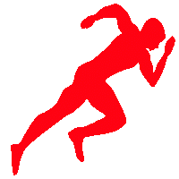

Un amateur est une personne qui se livre à une activité en dehors de son cadre professionnel, généralement sans rémunération, et dont la motivation ressort essentiellement de la passion.

LA FORMATION DES JEUNES FOOTBALLEURS (PRINCIPES ET PHASES À RESPECTER + LES ÂGES D'OR)
Préparation Physique Joueur et Coach Autres
Pour qu’un jeune se développe de manière optimale, il y a des principes et des phases de développement à respecter.
Quel est parfois le problème?
On met trop l’accent sur le résultat final, le classement et pas assez sur les besoins des jeunes.
On vise la performance sur le court terme alors que l’on devrait viser le développement sur le long terme !
Quelques idées intéressantes (même si elles ne sont pas toujours applicables):
Dans des clubs Anglais de Football, ils sont capables de “sous classer” un jeune dont la croissance est tardive pour lui permettre de jouer avec des joueurs de même âge biologique que lui, et donc de même taille. Ainsi le joueur se développe à son rythme et ne perd pas confiance.
Que faut il savoir pour bien développer les jeunes ?
-Il faut connaître les caractéristiques des différents groupe d’âge
On ne fera pas travailler un jeune de 11 ans de la même façon qu’un jeune de 16 ans.
-Il est très important d’avoir des repères tout au long du processus de développement et de savoir comment distribuer l'entraînement dans le temps avec une vision à long terme.
-Il est important de prendre en compte l’âge biologique des jeunes et non l’âge chronologique .
En effet, il peut exister une différence énorme entre 2 jeunes du même âge. Un jeune de 14 ans pourra être à son pic de croissance quand un autre le commencera seulement à 15 ans et demi.
L’âge chronologique n’est pas forcément égale à l’âge biologique !
Nous vous proposons un exemple de Plan de formation à long terme
Phase 1 Phase fondamentale - Explorer
Groupe d’âge : Garçons 6-9 ans
Objectif principal : Construire les capacités motrices générales
les points clés :
→Participer à autant de sports que possible et éviter le phénomène de « spécialisation hâtive » en ne faisant que du foot.
→Première “période critique de développement de la vitesse”
→Développer donc la vitesse linéaire mais aussi la vitesse multidirectionnelle
→Commencer les entrainements de force au poids du corps et medecine ball léger Phase 2 Apprendre à s'entraîner - Encourager Groupe d’âge : Garçons 9-12 ans
Objectif principal : Construire les capacités techniques générales
les points clés :
→Continuer à développer les qualités motrices fondamentales
→Apprendre les capacités techniques du football
→Continuer à développer la force au poids du corps , médecine ball léger, introduire les bonds, les sauts.
→Développer l’endurance avec des jeux et des relais
→Développer la connaissance de l’échauffement, des étirements, de la récupération, la nutrition, la relaxation, la concentration.
→Continuer à travailler la vitesse, l’agilité
Phase 3 S'entraîner à s'entraîner - Améliorer
Groupe d’âge : Garçons 12-16 ans
Objectif principal : Construire “le moteur” (force, aérobie), consolider les capacités techniques
les points clés :
→Développer la base aérobie après le
début du pic de croissance
→Fenêtre pour l'entraînement de la force qui commence environ 1 an
après le pic de croissance pour les garçons.
→Apprentissage des techniques correctes d’exercices avec poids.
→Accent spécial sur l'entraînement de la souplesse en raison de la croissance soudaine des os, des tendons, des ligaments et des muscles
→Améliorer encore les connaissances de l’échauffement, des étirements, de la récupération, la nutrition, la relaxation, la concentration.
Phase 4 S'entraîner à la compétition - Cultiver
Groupe d’âge : Garçons 16-18 ans
Objectif principal : Optimiser “le moteur”, la technique et la performance les points clés :
→Apprendre à réaliser les techniques spécifiques dans des conditions de compétitions variées pendant l’entraînement
→Programmes physiques, de récupération,préparation psychologique et développement technique sont maintenant individualisés en fonction des besoins du joueur
Phase 5 S'entraîner à gagner - Accomplir
Groupe d’âge : Garçons 18 ans et +
Objectif principal : Maximiser “le moteur” , la technique et la performance
les points clés :
→Les joueurs s'entraînent pour être en forme pour la compétition
→ L’entraînement est caractérisé par une grande intensité et un volume relativement grand avec des phases de récupération pour prévenir le surentraînement.
Les âges d'or
Longtemps décriés chez les jeunes, le développement de la filière anaérobie et le développement de la force ne seraient en réalité pas un danger pour l’enfant. Beaucoup d’études scientifiques l’ont démontré.
Il est donc possible de les travailler chez les jeunes ( de même que la coordination, l'endurance, la souplesse,..).
Cependant, on ne peut pas travailler et développer toutes les qualités physiques à la fois.
Il va donc falloir faire des choix et donner des priorités.
Comment faire?
Pour chaque qualité physique , il existerait des périodes clés nommées “âge d’or”.
Si l’on travaille bien une qualité physique pendant cette période, son développement devrait être optimal ! (le jeune devrait beaucoup progresser sur cette qualité physique).
Prendre en compte les ” âges d’or” de développement des qualités physiques pourrait être une aide précieuse pour bien cibler les qualités physiques à développer en priorité.
Quel type de préparation physique utiliser selon l’âge?
Il est possible de "diviser" la préparation physique en 3 dimensions :
-Préparation physique intégrée
-Préparation physique associée
-Préparation physique dissociée
Il semblerait recommandé pour les plus jeunes de développer les qualités physiques en utilisant en priorité une préparation physique intégrée (dans les jeux technico tactique).
Ensuite le développement des qualités physiques pourrait se faire en utilisant en plus grande proportion la préparation physique associée (alternance dans votre séance de jeux technico tactique et jeux “physiques” )
Puis quand le jeune se rapprochera de l’âge adulte, on développera de plus en plus les qualités physiques à partir d’un travail dissociée ( séance spécifique “physique” ).
Ce sont des tendances générales, il semblerait essentiel de toujours utiliser les 3 formes de préparation physique pour développer les qualités physiques au cours de l'année... mais dans des proportions différentes (plus les joueurs sont jeunes, plus on utilisera la préparation physique intégrée... plus on tend vers l'âge adulte, plus la proportion de préparation physique dissociée augmentera... ce qui ne veut pas dire que l'on utilisera plus les autres formes de préparation physique...
Quelques règles et principes à respecter chez les jeunes: Le principe de la charge croissante
Elle reste sans doute la plus fondamentale à long terme MAIS doit subir quelques modifications au cours de la progression: Des accélérations et des ralentissements sont à prévoir en fonction des périodes de développement.
Au regard de la saison annuelle il faut être très prudent. La charge doit être modulée à
certaines périodes de l’année ! (par exemple fatigue vers noêl).
Il est important de respecter des principes de progressivité dans le développement physique.
Dans un objectif de prévention du jeune joueur mais aussi dans un souci d’efficacité (cf. zones stimulantes de Platonov ).
Le jeune (ou débutant) bénéficie d’une plage de stimulation plus large que l’expert. En d’autres termes, il est beaucoup plus facile de le faire progresser, mais dangereux pour la suite de son évolution de proposer trop tôt des exercices « experts ». Sa zone de stimulation se réduira trop vite, et sa progression sera réduite sur le long terme. D’où l’importance de charges et de stimuli progressifs.
On prendra en compte "l'âge biologique" mais aussi "l'âge d'entraînement".
Le principe de continuité
Il faut pratiquer régulièrement pour progresser.
Il est plus efficace de s'entraîner un peu souvent que beaucoup une fois. Cela vaut pour la semaine, pour le mois, pour l'année..
Aussi, si l’on s’arrête quelques semaines, les pertes seront importantes (on régresse rapidement) et il faudra plusieurs mois pour retrouver son niveau...
Le principe de variété
il faut régulièrement apporter de la nouveauté pour continuer à progresser.
L'organisme s'adapte rapidement . Si on ne lui propose rien de nouveau, si on ne le "bouscule" pas, il n'y aura pas de progrès.
Le principe d'individualisation
Il faut toujours tenir compte des besoins du joueur et de ses capacités pour produire les effets les plus importants.
On ne proposera pas le même travail à un joueur de 12 ans ou de 18 ans, à un joueur d’élite ou de district, à un garçon..
Et, comme nous l'avons vu, on ne proposera peut être pas le même travail à deux jeunes de 13 ans qui ont un âge biologique très différent..
Le principe de la charge utile
Pour être sollicitante et efficace, une charge d’entraînement doit être suffisamment élevée et dépasser un seuil qui ne peut être qu’en relation avec le sportif lui-même et avec son état de forme.
Il existe une “charge optimale” qui permet d’obtenir les meilleurs effets.
La charge devra donc être adaptée à chaque joueur ( selon son niveau, son état de forme, ..).
Chez l’enfant on doit tempérer ce principe au regard de l’âge et du développement physiologique, le moment de l’année et des contraintes scolaires, le respect d’un besoin de détente…
Le principe de la succession judicieuse des exercices au cours de la séance
Chez les jeunes, les moindres capacités d’attention amènent à des enchaînements de situations plus fréquents. La DIVERSITÉ et la VARIÉTÉ sont indispensables. Formes ludiques et attrayantes.
Comment suivre la charge d'entraînement?
La méthode RPE (Rating of Perception Exercice) pourrait être un moyen de suivi utile à l’entraîneur pour évaluer simplement la charge d’entraînement « ressentie ».
Les questionnaires d’état de forme, de qualité du sommeil, .. réalisés toutes les semaines peuvent également permettre de déceler un état de fatigue passager.
Ces données « subjectives» seront à mettre en relation avec les données objectives de suivi de croissance .
Attention, n’oubliez pas que la charge d’entraînement doit toujours s’évaluer en tenant compte de l’ensemble des activités PHYSIQUES et sportives du jeune.
Et doit aussi s’adapter à la vie sociale, scolaire et
naturelle du jeune :
Période de travail scolaire intensif et des examens
Les périodes de vacances et de regroupement familial
Les saisons, le climat, les températures sont également à prendre en considération…